Based in London, United Kingdom
Hello, I'm Vivien, a Product Designer in London.
I specialise in turning complex business challenges into simple, delightful user experiences, with a background in data analytics.
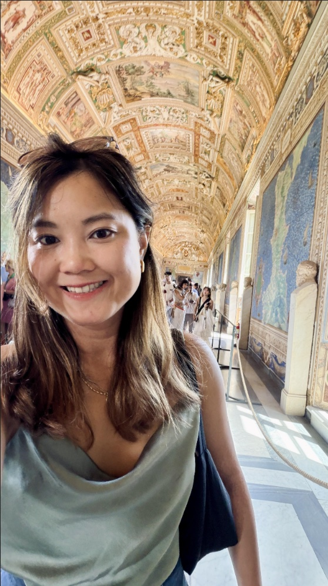
- Persuasive Emotional Design
- Design Tradeoffs & UX Decision-Making
- Facilitating UX Workshops
- Complex Apps for Specialized Domains
Previously worked in


Selected work
Complex systems, made to feel simple.
Four case studies across automotive payments, retail livestreaming, enterprise merchant onboarding and an internal AI hackathon.
Currently building
Side projects I design and build myself.
A new one lands every few weeks. Leave an email and I will tell you when the next one ships — that is all it is used for, and one line back to me takes you off it.
Eleven of them. Five carry the story; the rest keep their write-ups behind a line.
Also built
About
Design that empowers, not just impresses.
A curious and passionate problem-solver with a strong sense of empathy, committed to accessibility and inclusive design. My work spans UX/CX design across fintech, enterprise and AI, following five earlier years in digital advertising — fast-paced and client-facing work that built adaptability and communication.
“Design experiences that are not only impactful but also practical — delivering solutions that genuinely empower users.”
Product design clients
- JP Morgan (Payments)
- QVC
- BT Group
- Upgrade Pack
- Ordre
- Sun Life Financial Insurance
- Attitude is Everything
Digital marketing clients
- Jack Wills
- Links of London
- Bare Minerals
- Dixons
- Currys PC World
- Ralph Lauren
- Hilton Worldwide
- and other luxury & retail brands
Trained by Nielsen Norman Group
- Persuasive Emotional Design
- Design Tradeoffs & UX Decision-Making
- Facilitating UX Workshops
- Complex Apps for Specialized Domains
Pastime
What I do with the rest of the week.
-
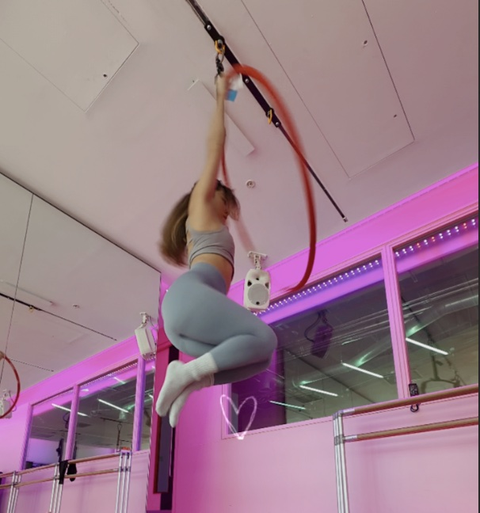
Aerial arts
Hoops, silks and trapeze since summer 2024.
-

Sound healing
Trained in Nepal in late 2024; hosts events in London.
-
Photography
Nature, architecture, dramatic skies.
-
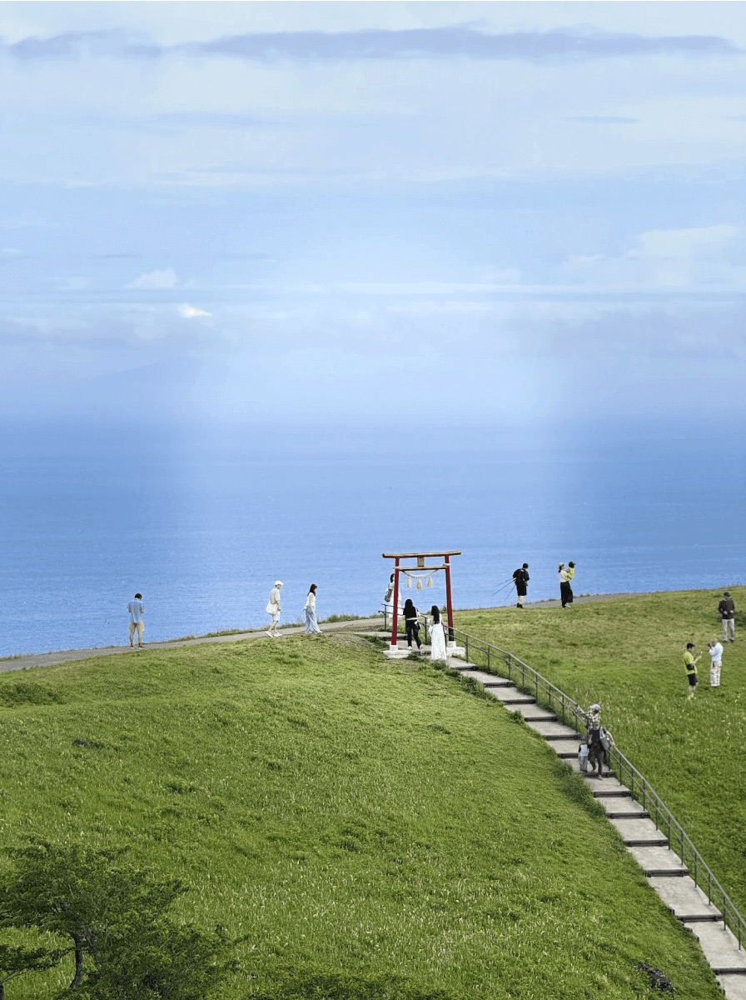
Travel
Thirty-one places so far, pinned on a map of the whole world.
-

Volunteer design
Design guidelines for @buddhist.connected.hk, ongoing since March 2024.
Pastime
Photography & travel
“Life is like riding a bicycle. To keep your balance you must keep moving.”— Albert Einstein
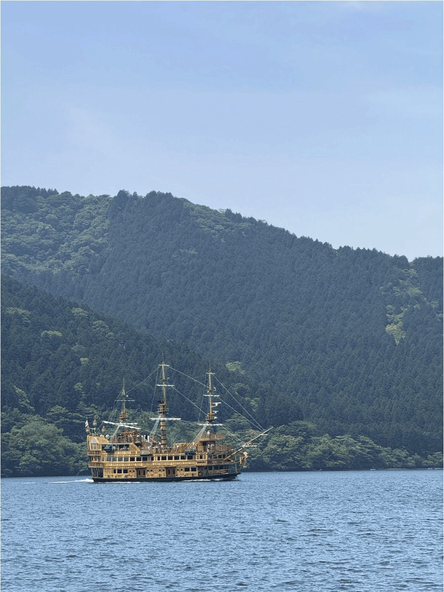
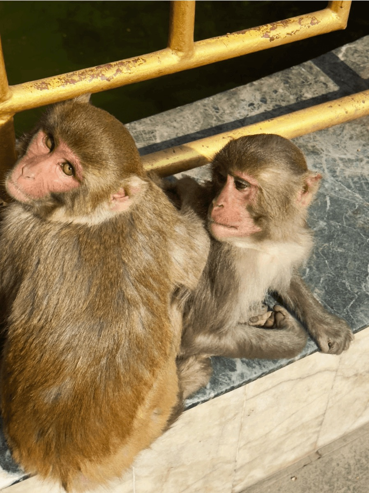
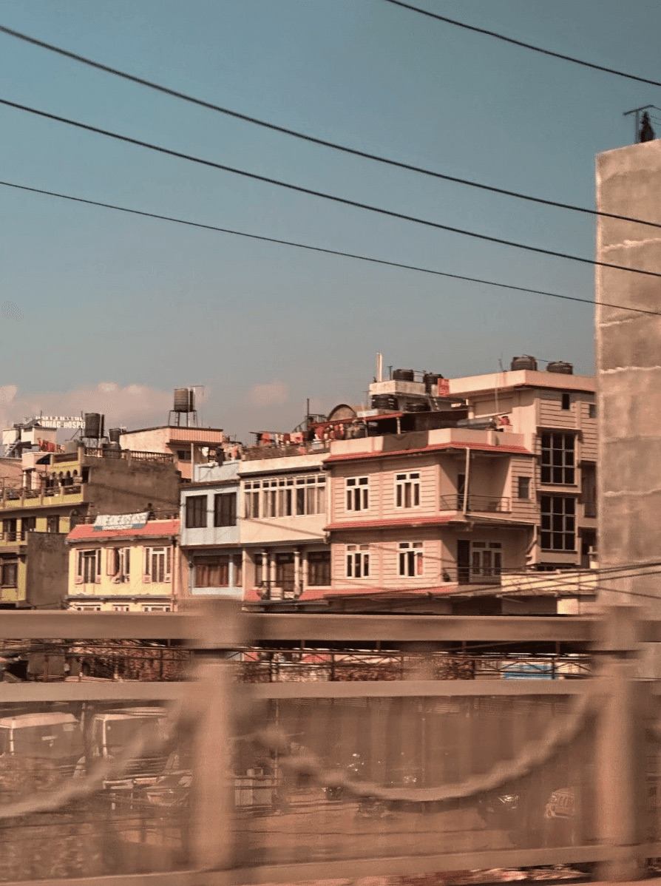
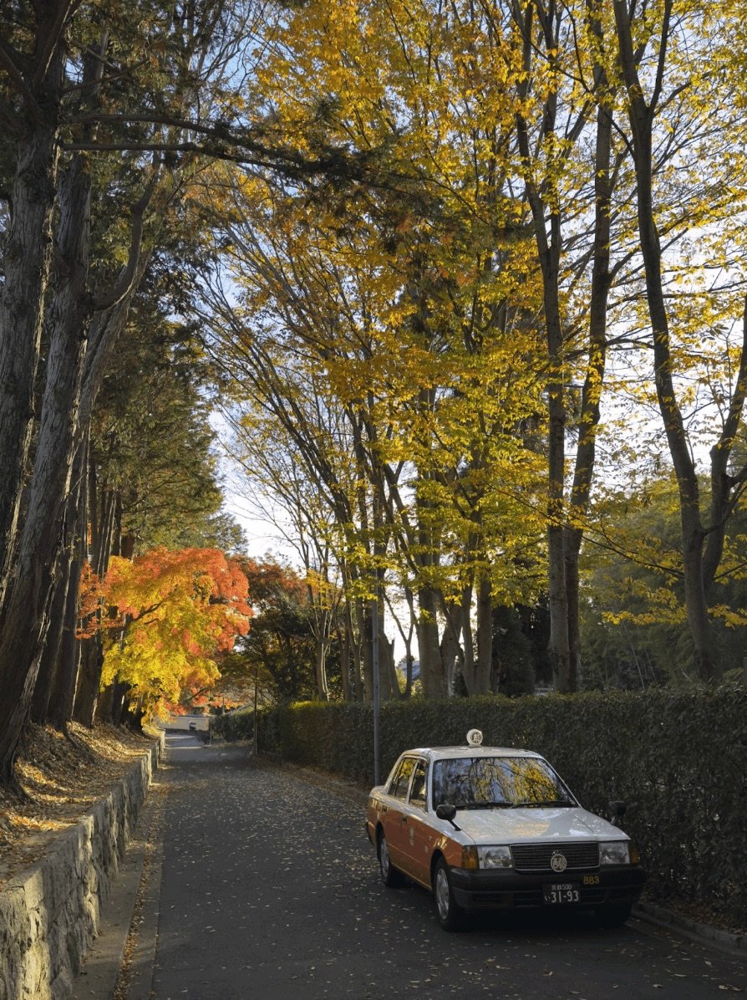
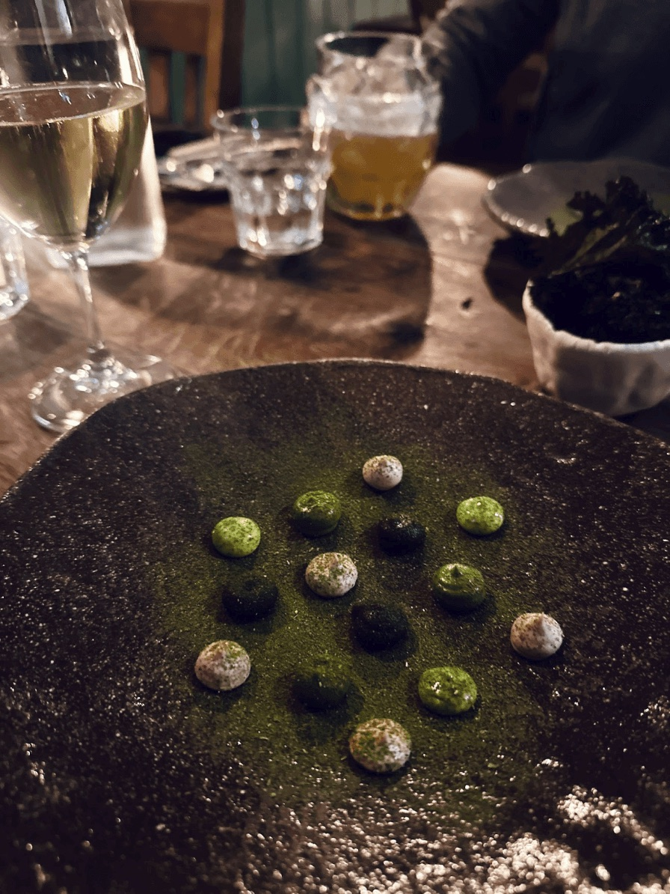
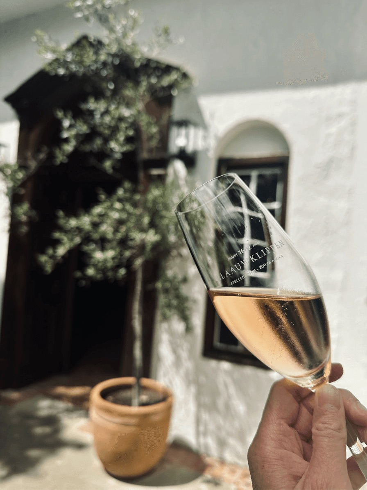
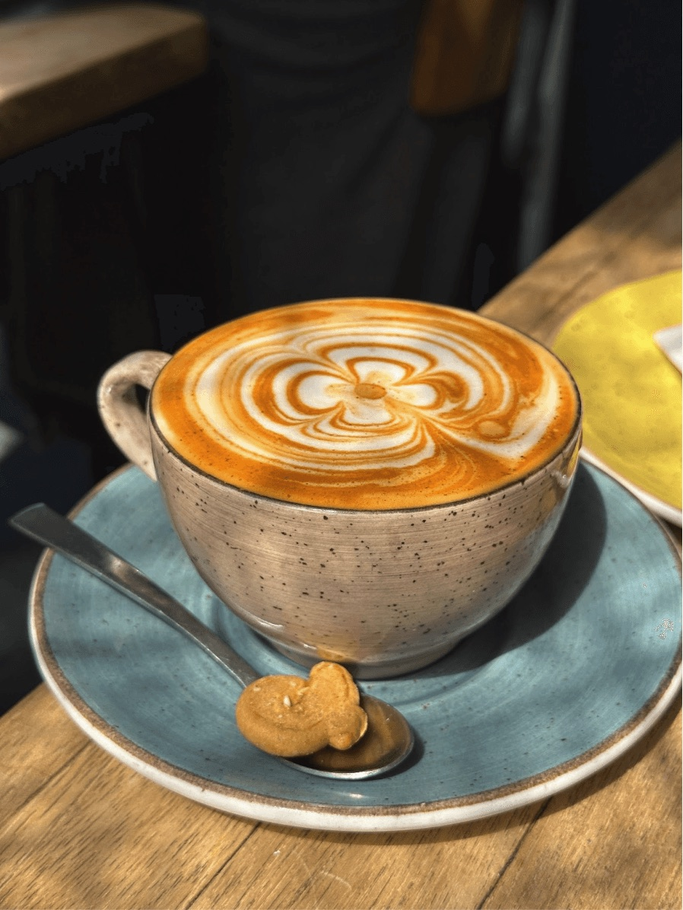
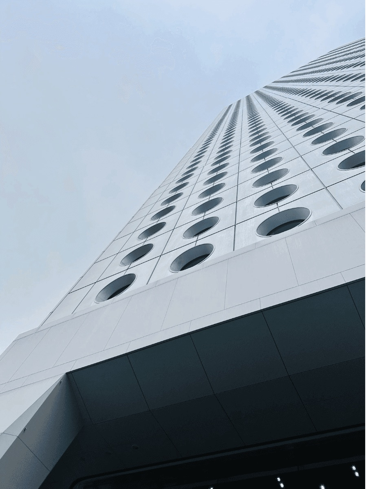
Pastime
Everywhere so far
The world total is the 193 UN member states plus the 2 observer states. Hong Kong is a territory rather than a member state; it is pinned and counted here as a place. Land view shades the whole of every country visited, so the share is of the world's land area — Antarctica falls outside the map — and not of ground actually walked.
Contact
Let's build something thoughtful.
Based in London, United Kingdom. Open to conversations about product design in fintech, enterprise systems and AI-driven work.
Email is the surest way to reach me; LinkedIn works just as well.
Currently exploring


© 2026 Vivien Chin · London
Résumé
Vivien Chin
Senior Product Designer · London, United Kingdom
Summary
A curious and passionate problem-solver with a strong sense of empathy, committed to accessibility and inclusive design. My work spans UX/CX design across fintech, enterprise and AI, following five earlier years in digital advertising — fast-paced and client-facing work that built adaptability and communication.
Experience
J.P. Morgan — Payments
London, UK · August 2022 – Present
- Manages initiatives across the payments portfolio, including KYB onboarding, Ring Project, SEPA checkout, SmartPay and Pay by Bank enhancements
Senior Product Designer — Fraud, Trust and Safety
2026 – Present
- Contributed to the development and implementation of Fraud Intelligence and Shield Experience, an advanced AI-driven fraud detection system that achieved a 40% reduction in fraudulent transactions during pilot testing.
Senior Product Designer — Mobility Payments Solution
2022 – 2025
- Worked on in-car payments across mobile, tablet and infotainment systems
- Conducted workshops and user research
- Built design systems using Google Automotive OS components
QVC — Product Designer
London, UK · April 2021 – July 2022
- Focused on video streaming products: live streaming, forums, onboarding
- Collaborated closely with researchers, developers and product managers
BT Group — Customer Experience Designer
London, UK · January 2020 – April 2021
- Designed end-to-end customer journeys for small business
- Facilitated workshops and defined KPIs
Ordre — Product Designer
London, UK · May – November 2019
- Fashion-tech company; created service blueprints, user journeys, wireframes, prototypes and style guides
Upgrade Pack — Junior UX Designer
London, UK · March – May 2019
- Fintech startup; conducted user research and usability testing
Threepipe — Account Manager
London, UK · April – September 2018
- Managed online media planning campaigns across SEO, Display, Social and PPC channels
Education
- Nielsen Norman Group — UX certificates, remote · 2023 – 2025
- General Assembly — User Experience Immersive, London · September – December 2018
- University of Western Ontario — Double Major, Criminology & Sociology · September 2009 – June 2013
Volunteer
- ADP List — Mentor · June 2023 – Present
- Design Club — Mentor · December 2019 – Present
- Tech Circus UX Crunch — November 2018 – 2020
JP Morgan UK
In-Car Payments
(Mobility Payments Solutions)
Background
Create a white label wallet for users to experience seamless In-Car Payments
A white label wallet on wheels, enabling users to make seamless and secure payments from their automotive operating system. Create wireframes, mock-ups, and prototypes that will serve as the foundation for a coded product and for pitching purposes utilizing the Google Automotive OS.

Scenarios including:
- 🔹 Device binding
- 🔹 Wallet management flow
- 🔹 Function on Demand (FOD)
- 🔹 Quick service restaurant (QSR)
- 🔹 EV Charging
- 🔹 Parking
Key users
We are designing for drivers and passengers. That said, the demo app is for OEM brand partners who will own the customer journey.
Driving habits
- Daily commute (city & highway)
- 🔹 Frequent quick errands and weekend trips.
- 🔹 Heavy use of navigation, music, and hands-free calls.
Needs & Goals
- 🔹 Seamless payments
- 🔹 Efficiency
- 🔹 Convenience
- 🔹 Integration
- 🔹 Security
“My car is basically my mobile office and entertainment hub. If I can pay for my coffee, charge up, and even unlock a new feature, all from the touchscreen, that's a game-changer for my busy life.”
Design challenges
With limited front-end developer assistance and restrictions imposed by the Automotive OS design system, we made necessary adjustments to ensure the experience is as realistic as possible, despite the limited content that can be integrated.
Pre-design research and workshops
Desk research / design
- Understand competitor landscape and In-Car Payment patterns
- Agree fidelity of designs / prototype — decide if the prototypes should be designed in certain brands / styles or white-labelled


Workshop preparation
- Agenda finalised with timings
- Dummy run of prototype & workshop
- Design updates as required for prototype
- Set up FigJam for the workshop with timings and agenda
Ideas
- Prioritising payment use cases (based on how long the journeys are from different scenarios)
- Prioritise exercise based on all the features brainstormed
- Create user flows and lo-fi screens

Mobility scenario workshops
- Short trips e.g. local errand (high frequency)
- Commuting e.g. going to work (higher frequency)
- Road trip e.g. going on a long journey / a road trip (low frequency)

Example: Scenario 2 — Sara, commuting to work
- Sara commutes for 1–2 hours per day and parks her car in the same car park every day.
- At the end of the working day, she reverses her drive and travels home and starts to plan her evening
Use case prioritisation & technical inputs
- DVF & strategic alignment (roadmap to ecosystem)
- Capture design considerations of prioritised use cases
Timeline
Various scenarios have been developed. For the infotainment system, we have been using the Google Automotive OS to develop the screens which works really well on the Samsung S9 tablet for demo.
Project results
We successfully reached our initial goal of securing key technical partnerships in 2023. In 2024, our focus will be on acquiring our first pilot client and integrating the solution into this emerging channel.
QVC Group
Livestreaming via Qurio App
(Presenter, Viewer and Moderator Flow)
Background
Create a livestreaming feature on the Qurio App
I designed a live shopping experience for QVC's social media app, Qurio, enabling creators to livestream product reviews, interact with viewers in real time, and answer questions directly. This feature supports presenter, viewer, and moderator roles, aligning with QVC's objectives to increase engagement, dwell time, and drive traffic back to the main site.


- Upcoming Live-stream widget — Upcoming live-streams are prioritised on the home screen so users know when they are happening
- Live-stream — Users can set up notifications for when live-streams start, so they can participate and ask questions
- Chats in Live-Streams — Users can give reactions or comments during the live-stream
Visual hierarchy tradeoffs (Problem)
The majority of our mature users have smaller screen-size phones
The average age of our users is 40–60; for their age group we increased the font size for better accessibility. To reduce cognitive load, we need to carefully consider button sizes and prioritize key features on the interface, making it easier for users to watch, ask questions, and interact with the host seamlessly.

Insights from user research (Host)
Hosts understood the logic of the live-streaming instantly
User interview with the host, from a host perspective, mainly testing:
- Could she understand the sequence for starting a livestream, and creating a thumbnail when the livestream has ended?
- Could she navigate across the features seamlessly during the live-streaming?
- Could she read all the comments that come through during the live-streaming? (Accessibility issue)

Insights from user research (with potential viewers)
Received positive / neutral comments on QVC presenters / guest involvement
Tested with 5 potential viewers. Mainly tested on:
- Could viewers understand the different types of badges, such as 'Ad', 'Live now', 'Qurio', 'live event recording', 'live now' and 'blue tick'?
- Could users understand if the cards are interactive? How useful are the 'reminder bells' 🔔 to them?
- What are viewers' interactions when they see the 'live now' banner, and what will their next steps be?
What user testing surfaced
- For upcoming live streams consider adding native functionality to add the reminder directly to users' device calendars
- For upcoming events, some participants missed more information on Special Value (TSV) items that will be featured in these live events
- 85% of the badges were understood by viewers
Timeline
I worked in an agile process on this project and it was a fun one.

Results
First livestreaming was a success
We emailed users and sent notifications ahead of the livestream, resulting in 32% of our user base joining the event. As expected, 13% of viewers submitted questions during the stream, while 74% engaged by using the 'hearts' feature to show support for the host.
32%
of the user base joined
13%
submitted questions
74%
used hearts
85%
badge comprehension
Retrospective
🪚 Trade-off
Letting go of a validated solution is never easy for a designer—especially when it feels like the best approach. However, smaller screen sizes significantly impact how users interact with content, which meant we had to carefully prioritize the most valuable features for both users and the business. This, combined with technical constraints, sparked a heated discussion around trade-offs.
♟️ Consider for scalability
While organizing features by priority, I was concerned that the livestream interface might not support all desired functionality and could limit future scalability. To address this, I worked closely with the PM to explore potential capacity for future features and ensured the design remained flexible and adaptable for future iterations.
🚦 Alignment
With many stakeholders involved and substantial technical debt, I approached the project systematically—breaking down the logic step by step, validating feasibility with developers, and keeping all teams aligned through thorough documentation and clear communication.
JP Morgan UK
Merchant Onboarding
Activating payments and enabling payouts across web and mobile
Background
MPS allows merchants to edit multiple applications at the same time under the same email address
This feature is an add-on for merchants to work on a few applications at the same time.


Problem statements
Merchants face inefficiencies and delays during onboarding to multiple programs due to receiving Sign Up links instead of Sign In links and the lack of automatic Sign In flow for ongoing processes.
⚙️ Problem 1
- Identification of the problem — Merchants receive Sign Up links instead of Sign In links when invited to additional programs, leading to inefficiencies.
- Impact — Redundant steps and wasted time.
💡 Problem 2
- Identification of the problem — Multiple invites do not automatically trigger the Sign In flow for ongoing onboarding processes, causing delays.
- Impact — Delays and complications in completing additional onboardings.
User requirements
- As a user of a merchant that has already started onboarding to one program I want to receive an invite for onboarding to another program with Sign In link instead of Sign Up, so that I can save some time while starting the new onboarding
- As a user of a merchant who has received multiple invites to onboard to different programs while one of those onboardings has been started I want the rest of the invites to start Sign In flow for me, so that I can make the onboardings to other programs using the old invites
User flow
User story and high level flow.

Outcome
The flow detects an existing account at the invitation stage and sends a Sign In link rather than a Sign Up one, and routes every later invitation into the session the merchant already has open. The redundant account-creation steps that had been holding up onboarding to additional programmes come out of the journey entirely.
JP Morgan UK
APEX AI Assistant
48-hour internal hackathon — 6th of 32 teams
(Won 6th Place / 32 groups)
Background
As an employee with a busy schedule I need issues identified and resolved automatically / quickly so that it does not impact my work.

User stories
- As an employee who is part of a collaborative team I need a mechanism to flag to my team when I am experiencing tech issues
- As an employee I need to be able to identify tech-related issues as soon as they occur so that I do not get stuck in the middle of my work
- As an employee with a busy schedule I need issues identified and resolved quickly so that it does not impact my work
User research
We surveyed 18 people within the firm, who shared with us how they find the level of complexity of resolving tech issues internally. Tech issues are tedious and drag on for an extended period of time.
90%
of JPMC respondents have faced tech issues preventing them from doing their work
67%
tech issues may last more than 2 hours
34%
find it hard / very hard to resolve the tech issues
28% of respondents take longer than 2 days and up to a week to solve their issues.
Painpoints and drivers
Current tech hub chatbot relies on agent resolution and can only be accessed through the website.


What can APEX AI do?
- Identification — Identify when a user is experiencing a problem
- Learning — Assistant learns from various internal data sources and previous user queries
- Resolution — Easy fixes are automated; the assistant suggests fixes to user queries and can raise a ticket for the user, online or offline
Outcome
The concept placed 6th of 32 teams in 48 hours. The survey behind it — 18 colleagues, 90% of whom had lost working time to a tech issue and 28% of whom waited days for a fix — turned an anecdotal complaint into a quantified case for automating first-line resolution instead of routing every issue to an agent.
Side project
Ask Maria
An airfare assistant that lives in Telegram. You tell her where you'd rather be in plain English; she watches the fares and messages back only when there's something worth knowing.

Background
Price alerts tell you a number went down. They don't tell you whether the fare is worth taking, whether the seller is trustworthy, or what the trip actually costs once bags and self-transfers are counted. Maria is the version of that tool that answers those questions instead — in a chat, in the app people already have open.
How it works
- No commands, no forms — "anywhere sunny in half term, two of us, under £400 each" is a valid instruction. The interface is a conversation because the request is genuinely fuzzy, and a date picker would force a precision the traveller doesn't have yet.
- Two scheduled jobs, not a server — a launchd agent checks fares twice a day and a second one polls the inbox every minute, so she replies in about a minute without anything running in the foreground.
- Judgement, not just a number — each alert says whether she'd take the fare and why: seller screened against ATOL, IATA and Trustpilot, one-ways and baggage totalled, cheaper-but-worse options called out.
- Multi-user by invite — an invite table, per-user watchlists and price history in SQLite, so the beta can grow past one person.
Design decisions worth defending
- The copy makes no promise the system can't keep — no "24/7", no "instant", no cheapest-price guarantee. She "usually replies within a minute or two", and the footer states plainly that this is an information service, not a travel agent, which is a regulated description in the UK.
- The two quotes are labelled as mine, not as customers' — the design comp came with invented testimonials attached to invented people. Real results under a real name are worth less as marketing and more as trust.
- Signup is two steps on purpose — the landing page only carries an email across; the second page asks where you're dreaming of flying, which segments the waitlist from day one and tells me who to admit next.
Screens
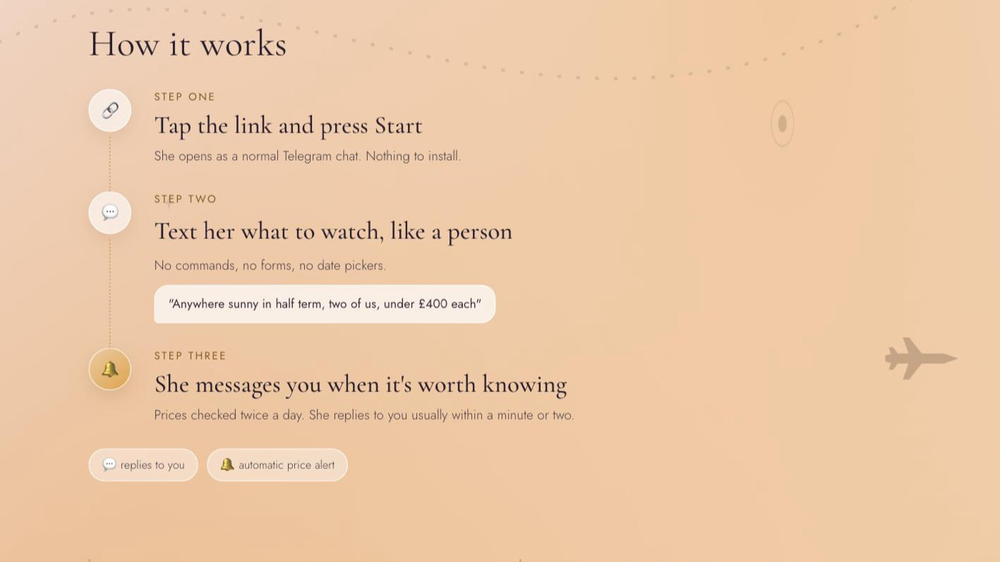
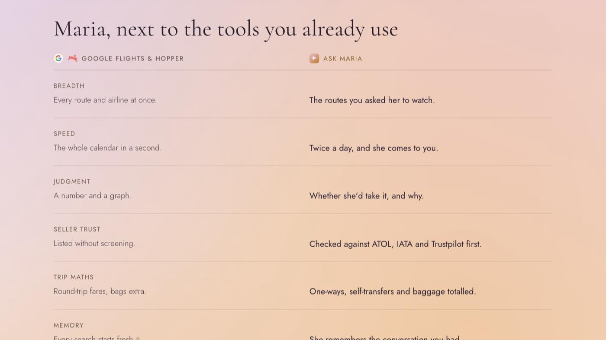
Side project
SplitEasy
Splitwise-style expense splitter — multi-currency trips and a settle-up algorithm that reduces who-owes-who to the fewest transfers.

Background
Splitting a trip properly: several people, several currencies, and a final answer that is the shortest list of payments rather than a wall of balances.
How it works
- Fewest transfers — balances are settled by repeatedly matching the largest creditor against the largest debtor, so three people owing each other collapse into one or two payments.
- One base currency — expenses are entered in whatever was actually paid and converted through live rates, falling back to bundled rates offline.
- Splits must balance — the submit button stays disabled until the shares add up to the total.
Screens


Side project
InnerWaves
Tarot / I-Ching reading app with a retrieval layer and a feedback loop that turns well-rated readings into examples for future ones.

Background
A reading app covering tarot, I-Ching and angel numbers, in Traditional Chinese with an English toggle. The front end is a single static page; a Node server handles readings.
How it works
- Retrieval, not invention — reference knowledge for each drawn card or hexagram is injected into the prompt from a local dataset, so readings stay anchored to the source imagery rather than being improvised.
- Feedback loop — every reading is logged, and 👍-rated ones become few-shot examples for later prompts.
- Three modes — tarot spreads, I-Ching hexagrams and angel numbers share one interface.
Screens
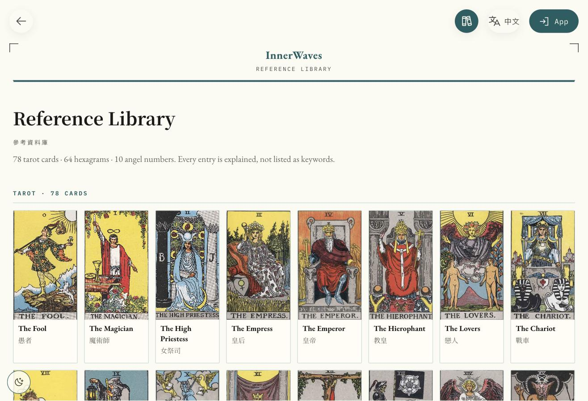
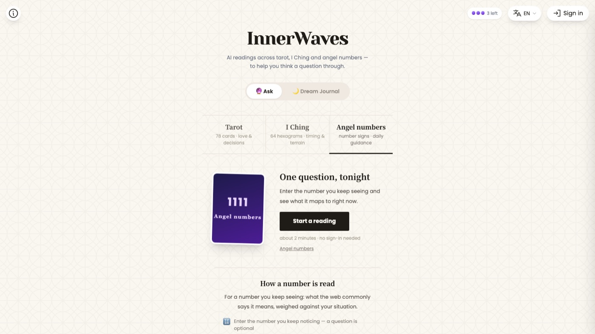
localhost:8787 resolves there only.Side project
Attune
A sound-healing membership for ADHD, anxiety and sleep — brand, pricing and landing page, built to test demand before a single line of app code.

Background
Tibetan bowl sessions aimed at a specific nervous system rather than at "relaxation" in general. The product is three named sessions — Focus Flow (ADHD, 25 min), Regulate (anxiety and attachment, 10 min) and Wind Down (sleep, 20 min) — sold as a membership at £72 a year, with a £250 tier for work made to your intention.
How it works
- The app is deliberately not built yet — the sequence is waitlist, then payment links, then fulfilling the first members by hand, and only then application code. Three kill criteria decide whether that last phase happens at all.
- Named sessions, not a library — three sessions with a stated purpose each, rather than a content catalogue. No streaks, no badges, no app-blocking, no social feed; the product is meant to be closed, not returned to.
- Two tiers with a real difference — Core is the three sessions on your own schedule; Circle adds a monthly track composed for your intention, a live group session and a quarterly 梅花易數 reading paired with a custom track.
Screens
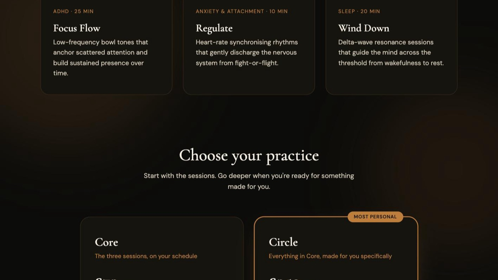
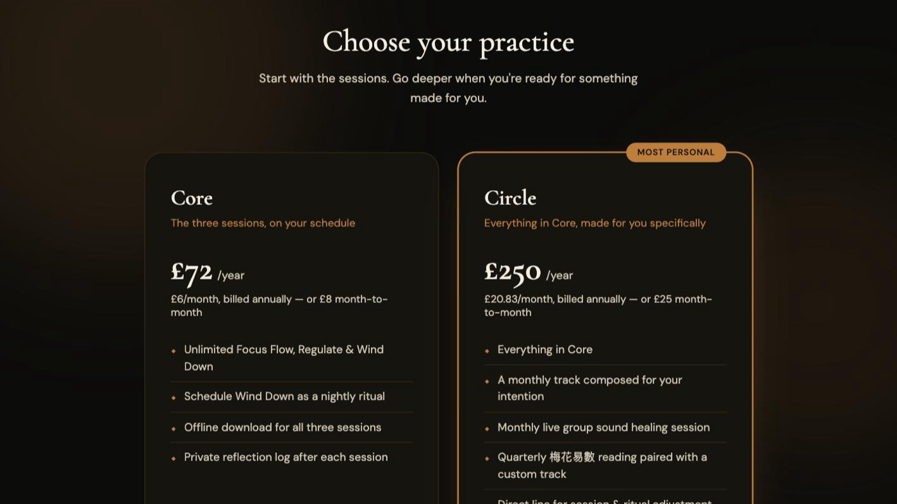
localhost:8794 resolves there only.Side project
Daily News Dashboard
Bilingual EN/粵語 newspaper-style briefing covering UK, London, Hong Kong and Global, rebuilt every morning.

Background
A daily paper written for one reader. It weights London first, keeps a Hong Kong section alongside UK and Global, and reads as a broadsheet rather than a feed — in English or Cantonese, at a tap.
How it works
- The model writes the content, code writes the layout — an agent gathers the day’s stories and emits a
data.json; a Python renderer owns every layout decision. Changing the design used to mean editing a prose spec and paying for a ten-minute generation to find out what it did. It now renders in milliseconds from yesterday’s data, and the same way twice. - Bounded, because it once wasn’t — an edit asking the agent to keep re-checking sources turned an eight-minute job into five consecutive runs of three to seventeen hours, unnoticed for five days. A budget written in a prompt is advisory; the wrapper that replaced it enforces a hard timeout that kills the whole process group, a lock against overlapping runs, and a dead-man’s switch — the only thing that catches a job that never started at all.
- Thirty feeds, each one verified — sources are checked rather than assumed, and the dead ones are written down so no run pays to retry them. Category-specific feeds exist so every filter chip has something behind it.
- Bilingual all the way down — every headline, summary, category, label and status line exists in both languages, so the toggle swaps the page rather than only the headlines.
Screens


127.0.0.1:8793.Side project
Finance Hub
Personal finance dashboard — portfolio, spending, currency and an AI-written daily briefing. Figures are blurred in these screenshots.

Background
A dashboard that pulls broker and bank exports into one place and writes a plain-English briefing each morning. No database — everything is flat JSON on disk.
How it works
- Briefing over dashboard — rather than only charting balances, it writes a short daily note on what actually changed and what is worth thinking about, explicitly framed as information rather than advice.
- Ingest pipeline — parsers for Trading 212 and Vanguard exports plus spending CSVs.
- Scheduled — a morning briefing and a watchlist check run as scheduled jobs and notify over Telegram.
Screens
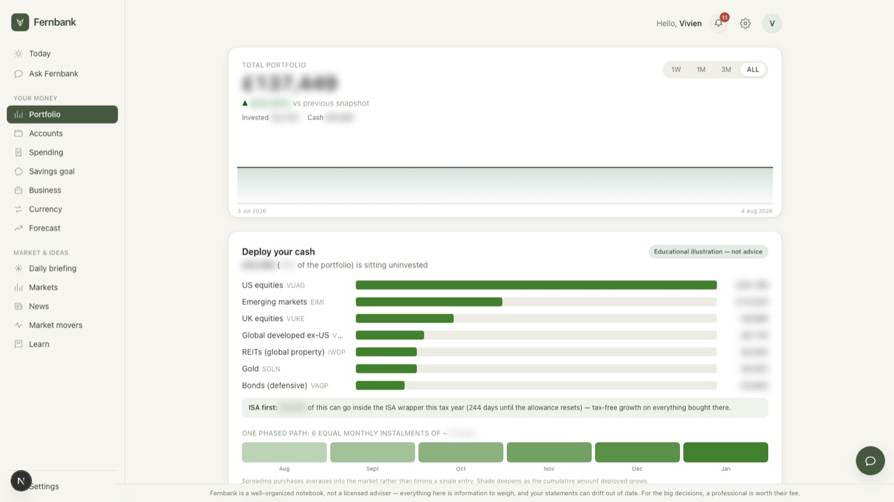
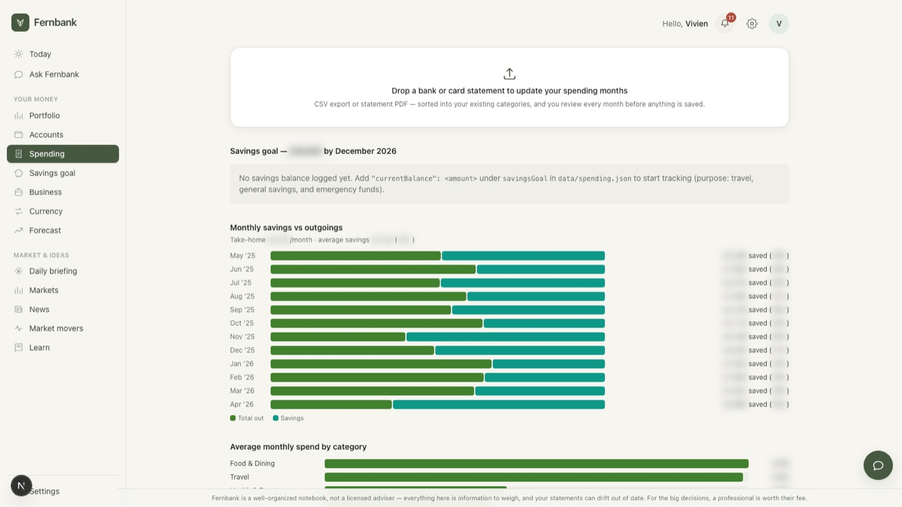
localhost:3000 resolves there only. GitHub privateSide project
Orchestrator
A Director drives planner → coder → tester → reviewer agents across the projects in this workspace, with every run tracked to a verdict.

Background
A local web app where a "Director" agent proposes and runs work across the other projects in the workspace, one stage at a time, so each change is planned, built, tested and reviewed before it lands.
How it works
- Four stages, one verdict — planner, coder, tester and reviewer each hand off a file, and the run ends in an explicit SHIP or FIX FIRST.
- Opt in per project — projects start disabled; enabling one is what grants the agents write access to that folder.
- Cancellable — a running cycle can be stopped from the UI.
Screens
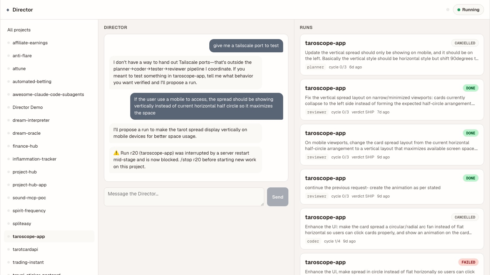
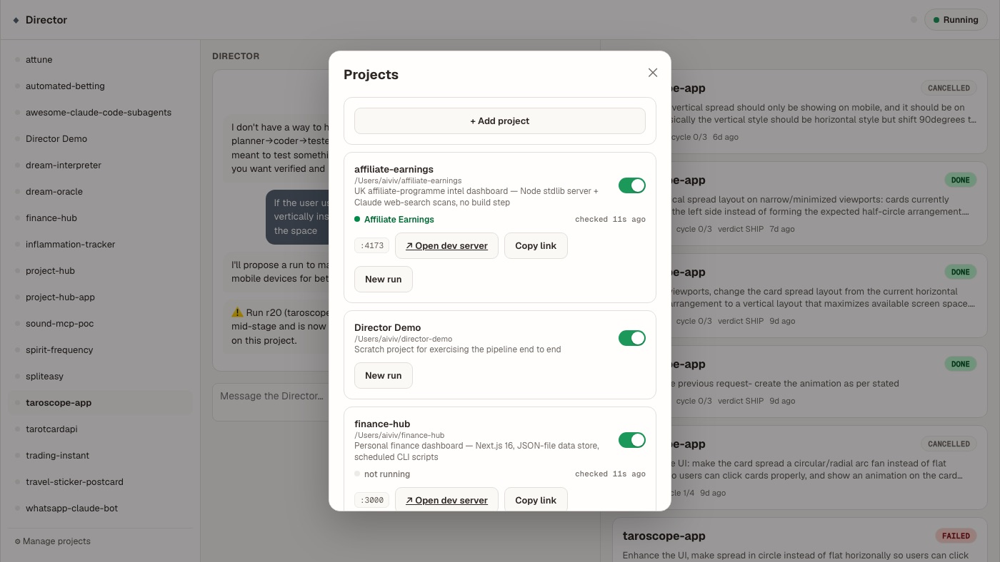
127.0.0.1:8083 resolves there only.Side project
Project Hub
AI agent-team orchestrator — a team of role agents works a board, chats in threads and writes deliverables to a shared workspace.

Background
Where the agent-team idea is worked out properly: named roles — Product Manager, Tech Lead, UX Lead, Growth Analyst — each pick up cards, run background loops and produce real files.
How it works
- Roles, not prompts — each agent has a standing brief and its own thread, so the board reads like a team rather than a chat log.
- Blocked means blocked — agents that need a decision surface as "Waiting on you" instead of guessing.
- Ask me first — a global setting controls how much the team may do unattended.
Screens

localhost:8082 resolves there only. GitHubSide project
Postmarked
Travel map and digital postcard studio — an interactive world map of city suggestions, plus a postcard maker with stamps, typewriter captions and postmarks.

Background
Two halves of one idea: a world map of travel suggestions by city, and a postcard studio that turns a photo into something you would actually send.
How it works
- Paper reference — the postcard follows a real one: photo print top-left, perforated stamp with a globe cancellation and black ring postmark top-right, typewriter caption below, a dashed divider and a 📍 line at the foot.
- Exports a PNG — the finished card downloads as an image.
- No backend — state is shared entirely through a base64url link.
Screens
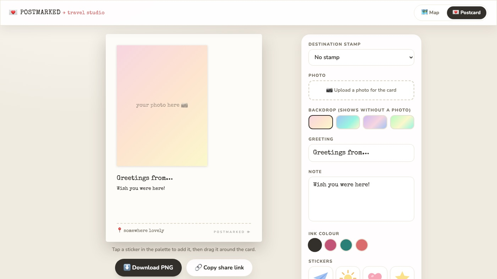
Side project
Anti-Flare
Eczema anti-inflammatory diet app — a daily fact, habit tracking, and a camera scan that reads a meal and rates its likely impact.

Background
A companion for managing eczema through diet: what to eat, what to avoid, and whether yesterday actually helped. Everything stays on the device — there is no sign-up and no server-side record.
How it works
- Point the camera at a meal — the photo goes to a vision model that returns a structured assessment of its likely eczema impact rather than a calorie count.
- Evidence on the card — daily facts cite their source, so the advice can be checked rather than taken on trust.
- Habits, gently — eight daily habits tracked without streak pressure.
Screens
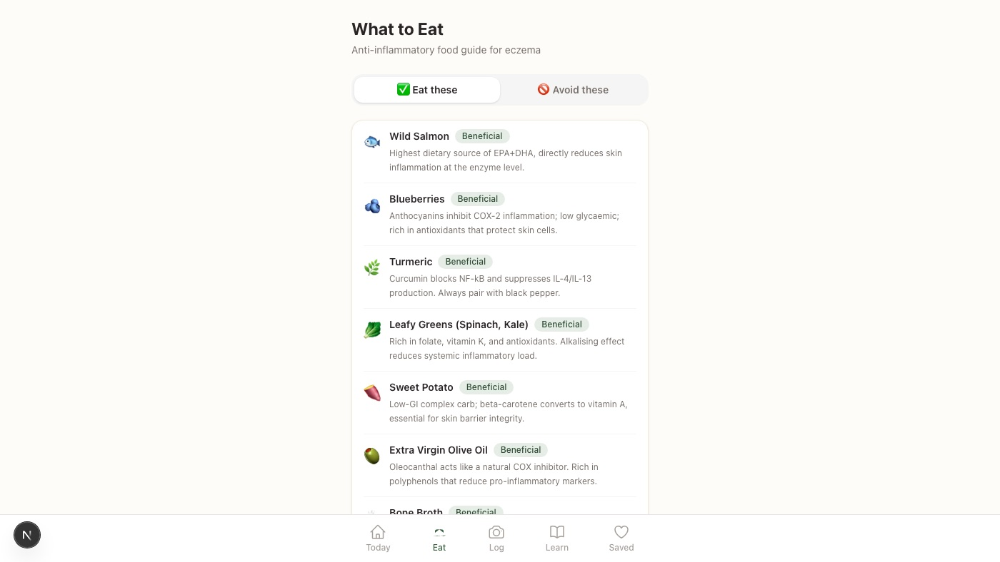

Side project
Dream Oracle
Dream analysis for Wavesbychin — speak or type a dream and get a structured reading back, with voice input in three languages.

Background
Built for the Wavesbychin sound practice. You speak or type a dream, optionally answer a few refining questions, and receive a reading in five parts.
How it works
- Five sections — dream analysis, interpretation, an I Ching / 梅花易數 cross-reference, a matched soundscape and art prompt, then a shareable insight.
- Voice or text — dictation in English, 廣東話 and 普通話, with an eight-language interface.
- Works without credentials — with no API key the server still serves a demo reading, clearly flagged, so the flow can be shown at any time.
Screens
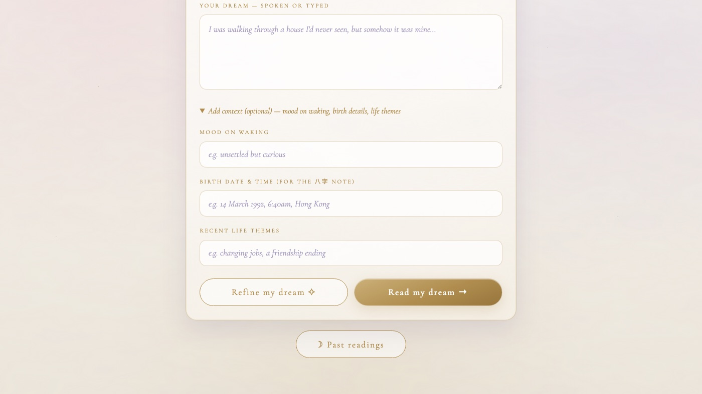
127.0.0.1:8788 resolves there only.SIZE
STAMPS
MIRROR
CHECKPOINTS
0 / 14
EXTRAS — JUMP FOR THEM
0 / 14
CHAPTER
Hong Kong → London
KEYS
UNLOCKED
- Walk right to begin.
CAST
you The Stakeholder
in-house The Aerialist
beyond the desk Agent 04
the Lab
START
Walk right to begin.
Each checkpoint you pass unlocks a piece of the journey here.
SCORE
0
BAGGED
0 / 18
PATIENCE
FOCUS MODE
Hold space to slow the sky and widen the bag. It runs down, and refills when you let go.
KEYS
BAG THESE
DODGE
NOTHING BAGGED YET